Course: CSST106 | Term: 1st Semester, AY 2026–2027 | College of Computer Studies
| Field | Details |
|---|---|
| Course | CSST106: Computer Vision and Perception |
| Laboratory Activity | Lab Exercise No. 1 – Image Manipulation |
| Week Number | Week 1 – 2 |
| Term / Academic Year | 1st Semester, AY 2026–2027 |
To familiarize students with the concept of computer vision, understand how digital images are represented as 2D/3D arrays of pixel intensity values, differentiate OpenCV BGR vs. RGB color ordering, inspect and modify individual pixels, and perform basic image manipulation operations (ROI cropping, resizing, and rotation) using Python and OpenCV.
On the default `640×480` color scene (`(480, 640, 3)`), splitting channels clearly revealed pure Red swatches illuminating only the Red channel while appearing zero in Blue/Green, whereas un-converted BGR rendering visibly swapped red and blue regions. Overwriting the `25×25` patch around `(480, 90)` updated pixel intensities live, and ROI slicing, `50%` bilinear downscaling, and `90°` clockwise rotation updated output dimensions cleanly.
Lab 1 Quantitative Measurements
| Operation / Property | Result |
|---|---|
| Original Image Shape | (480, 640, 3) (H×W×C) |
| Inspected Pixel (x=480, y=90) | BGR=[167, 167, 255] | RGB=[255, 167, 167] | Gray=193 |
| Modified Patch Size & Color | 25×25 px overwritten to RGB [255, 215, 0] |
| Cropped ROI Bounds (x1, y1, x2, y2) | (20, 60, 400, 440) → Shape (380, 380, 3) |
| Resized (50%, INTER_LINEAR) | Shape (240, 320, 3) |
| Rotated (90° Clockwise) | Shape (640, 480, 3) |
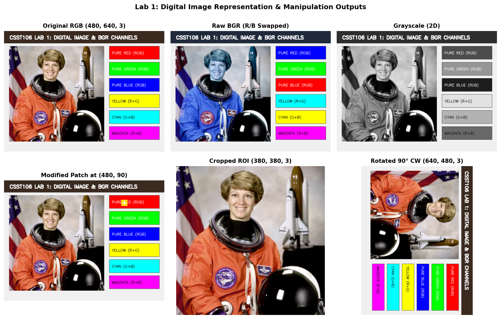
1. How are digital images represented as 2D and 3D arrays in Computer Vision?
A grayscale image is a 2D matrix of shape `(Height, Width)` where each cell stores a single `uint8` luminance value in `[0, 255]` (`0` = black, `255` = white). A color image is a 3D tensor of shape `(Height, Width, 3)` stacking three 2D intensity planes. NumPy indexes rows (`y`, height) first and columns (`x`, width) second (`img[y, x]`).
2. Why does OpenCV use BGR channel ordering and how do color spaces differ?
OpenCV historically adopted BGR (Blue, Green, Red) ordering to match early Windows/camera hardware buffers, whereas Matplotlib, Pillow, and Streamlit display RGB. Failing to convert BGR→RGB swaps red and blue hues. Converting BGR to Grayscale (`Y = 0.299R + 0.587G + 0.114B`) collapses 3 channels into 1 luminance plane, reducing memory and compute cost by 3× when hue is unnecessary.
3. What are real-life applications of basic image representation and manipulation?
Medical imaging (ROI isolation and resizing of X-ray/MRI scans), autonomous driving (camera calibration, lane ROI cropping, and resolution normalization), automated manufacturing inspection (pixel-level defect localization), and document digitization (orientation correction and contrast prep).
Digital images function as structured multi-dimensional numerical matrices whose pixel values and color channel layouts can be inspected, sliced, rescaled, and rotated deterministically with OpenCV, establishing the essential data representation foundation for filtering, edge detection, and deep vision pipelines.
| Field | Details |
|---|---|
| Course | CSST106: Computer Vision and Perception |
| Laboratory Activity | Lab Activity 2 (Manual Exercise 3) – Edge Detection Technique |
| Week Number | Week 3 – 4 |
| Term / Academic Year | 1st Semester, AY 2026–2027 |
To understand and implement fundamental edge detection algorithms using Python and OpenCV — specifically the Sobel gradient operator and the Canny multi-stage edge detector — apply Gaussian noise-reduction preprocessing, and compare the resulting edge maps to prepare for object detection, segmentation, and feature extraction.
On the default `768×512` test image (`393,216` pixels), Sobel Combined produced continuous thick gradient-strength ridges with peak magnitude `675.4` and mean gradient `44.55` in `3.31 ms`, whereas Canny `(100, 200)` extracted crisp 1-pixel binary contours covering `13,979` edge pixels (`3.56%` density) in `1.87 ms`.
Lab 2 Edge Detector Quantitative Metrics
| Detector | Kernel / Thresholds | Edge / High-Grad Pixels | Edge Coverage (%) | Mean Intensity | Execution Time (ms) |
|---|---|---|---|---|---|
| Sobel Combined (Gradient Magnitude) | ksize=3, CV_64F | 36887 | 9.38 | 16.49 | 3.306 |
| Canny Edge Detector | low=100, high=200 | 13979 | 3.56 | 9.07 | 1.865 |
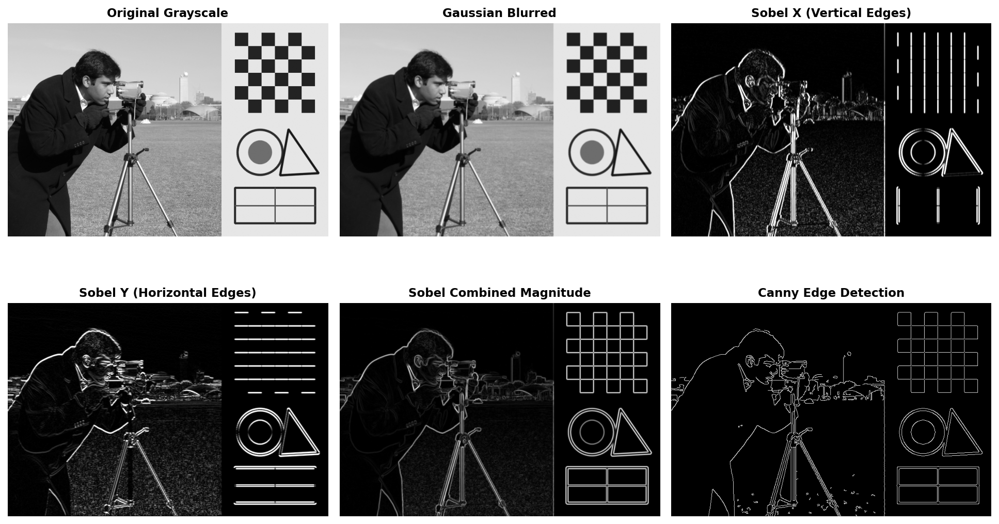
1. Explain the differences between the edge maps produced by Sobel and Canny edge detection.
The **Sobel operator** evaluates local first-order partial derivatives (`Gx` and `Gy`) using 3×3 convolution kernels and outputs a continuous grayscale gradient magnitude map (`√(Gx² + Gy²)`). Its edges are thicker, vary smoothly in intensity, remain sensitive to textured noise, and require a manual threshold to turn into binary contours. In contrast, **Canny edge detection** builds on smoothed gradients with two extra refinement stages: (1) **Non-Maximum Suppression (NMS)**, which suppresses non-peak gradient pixels perpendicular to the edge direction to yield crisp **1-pixel-thin ridges**, and (2) **Hysteresis Double Thresholding** (`low=100`, `high=200`), which preserves weak edge pixels only when connected to strong edges (`> 200`). Consequently, Canny produces clean, continuous, binary object outlines with minimal isolated speckle noise.
Comparing Sobel and Canny demonstrates the trade-off between raw directional gradient strength (Sobel, useful when edge magnitude or orientation weights are needed) and clean topological contour extraction (Canny, optimal for downstream shape analysis, Hough transforms, and contour-based segmentation).
| Field | Details |
|---|---|
| Course | CSST106: Computer Vision and Perception |
| Laboratory Activity | Lab Exercise No. 3 – Histogram Equalization and Contrast Adjustment |
| Week Number | Week 4 – 5 |
| Term / Academic Year | 1st Semester, AY 2026–2027 |
To understand and implement histogram equalization to enhance image contrast, compare global histogram equalization against linear contrast stretching and Contrast Limited Adaptive Histogram Equalization (CLAHE), and analyze intensity histograms, Cumulative Distribution Functions (CDFs), and noise amplification.
On the low-contrast grayscale image (`[43, 175]` initial intensity range), Global Histogram Equalization spread intensities across `[0, 255]` and boosted standard deviation sharply, while Linear Stretching preserved smooth midtone gradients. CLAHE (`clipLimit=2.5`, `8×8` tiles) recovered local coin surface markings across both dimly lit and brighter corners without over-saturating flat background regions or blowing up sensor noise. In Color (YUV) mode, equalizing `Y` restored vibrant cup contrast without shifting color hue.
Lab 3 Quantitative Metrics (Grayscale Mode)
| Method | Mean Luminance | Contrast (Std Dev) | Min–Max Range | Entropy (bits/px) |
|---|---|---|---|---|
| Original | 88.80 | 15.85 | [62, 144] | 5.677 |
| Global Hist Eq | 130.54 | 72.39 | [0, 255] | 5.653 |
| Linear Stretch | 91.06 | 72.46 | [0, 255] | 5.556 |
| CLAHE | 94.19 | 33.20 | [33, 197] | 6.821 |
Lab 3 Quantitative Metrics (Color YUV Mode)
| Method | Mean Luminance | Contrast (Std Dev) | Min–Max Range | Entropy (bits/px) |
|---|---|---|---|---|
| Original | 104.84 | 20.92 | [68, 159] | 6.197 |
| Global Hist Eq | 129.48 | 73.33 | [0, 255] | 6.168 |
| Linear Stretch | 104.68 | 64.68 | [0, 255] | 6.130 |
| CLAHE | 109.56 | 34.55 | [32, 213] | 7.073 |
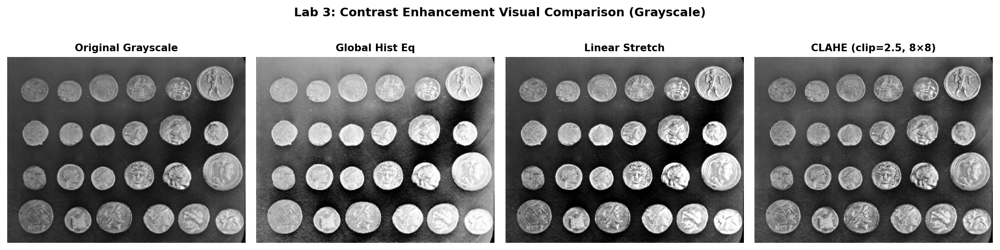
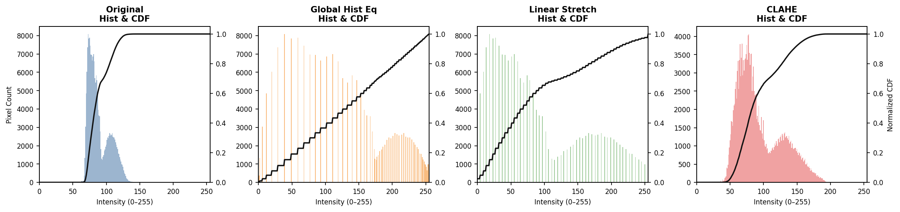
1. What is histogram equalization?
Histogram equalization is a non-linear point-processing intensity transformation that redistributes pixel brightness values so the resulting image histogram spans the entire available dynamic range `[0, 255]` as uniformly as possible.
2. Why do we need histogram equalization?
Under-exposed, over-exposed, hazy, or poorly lit images often confine pixel intensities to a narrow gray band, hiding structural details. Equalization expands contrast automatically, improving human readability and boosting the reliability of downstream edge detectors, feature extractors, and classifiers.
3. How does histogram equalization work mathematically?
Given an 8-bit image with `N` pixels and normalized intensity probabilities `p(r_k) = n_k / N`, the **Cumulative Distribution Function (CDF)** is `CDF(r_k) = Σ_{j=0}^{k} p(r_j)`. Each input gray level `r_k` is mapped to `s_k = round(255 × CDF(r_k))`. Regions with dense pixel populations produce steep CDF slopes and are stretched across wide output intervals, whereas sparse intensity ranges are compressed.
4. How does CLAHE work?
Contrast Limited Adaptive Histogram Equalization (CLAHE) divides the image into a grid of small tiles (e.g., `8×8`). Within each tile, histogram bins exceeding `clipLimit` are clipped and their excess pixel counts are redistributed uniformly across all 256 bins before computing the local CDF—capping maximum contrast amplification to suppress background noise. Adjacent tiles are then blended via bilinear interpolation to remove artificial tile seams.
5. What are real-world applications for histogram equalization?
Medical radiography (enhancing subtle fractures in chest X-rays, mammograms, and CT slices), satellite/aerial imagery (penetrating atmospheric haze to map terrain and coastlines), and night-time/tunnel autonomous driving and security cameras (recovering pedestrian and obstacle contrast in low-light frames).
Observations on Detail Visibility & Noise Amplification:
Global histogram equalization boosts overall contrast drastically but amplifies random background grain in uniform regions where histogram spikes create very steep CDF slopes. CLAHE resolves this trade-off by adapting locally to uneven illumination while bounding noise amplification via `clipLimit`.
Global histogram equalization, linear contrast stretching, and CLAHE each manipulate intensity distributions differently; applying equalization selectively on luminance (`Y` in YUV) preserves natural color fidelity, and CLAHE provides the strongest local detail enhancement with controlled noise amplification on unevenly illuminated imagery.
| Field | Details |
|---|---|
| Course | CSST106: Computer Vision and Perception |
| Laboratory Activity | Lab Exercise No. 4 – SURF Feature Detection in Python using OpenCV |
| Week Number | Week 6 |
| Term / Academic Year | 1st Semester, AY 2026–2027 |
To understand and implement SURF (Speeded-Up Robust Features) keypoint detection and descriptor extraction in OpenCV, visualize rich keypoints with scale and orientation, perform cross-image feature matching using Lowe's ratio test, explore upright U-SURF mode, and benchmark SURF against SIFT and ORB.
Active SURF backend (`DoH + 64-D Haar Wavelet SURF Fallback (Non-free module excluded in PyPI wheel)`) detected `450` keypoints on the reference object and `542` keypoints on the cluttered target scene at `hessianThreshold=400`. Rotation-invariant SURF yielded `55` good Lowe-ratio matches across the `-22°` rotation and `0.88×` scale shift, while U-SURF skipped orientation estimation for faster extraction at the cost of lower rotation invariance. SIFT achieved dense high-accuracy matching, and ORB executed fastest using 256-bit binary descriptors.
Lab 4 SURF vs. U-SURF vs. SIFT vs. ORB Benchmark
| Algorithm | Keypoints (Ref) | Keypoints (Scene) | Descriptor Type | Detect+Compute (ms) | Match Time (ms) | Good Matches |
|---|---|---|---|---|---|---|
| SURF (Rotation-Invariant) | 450 | 542 | 64-D Float32 (Haar) | 61.48 | 2.81 | 55 |
| U-SURF (Upright) | 450 | 542 | 64-D Float32 (Haar) | 54.42 | 2.81 | 9 |
| SIFT | 247 | 784 | 128-D Float32 (DoG) | 77.59 | 11.77 | 143 |
| ORB | 600 | 1000 | 256-bit Binary (BRIEF) | 938.04 | 5.95 | 177 |
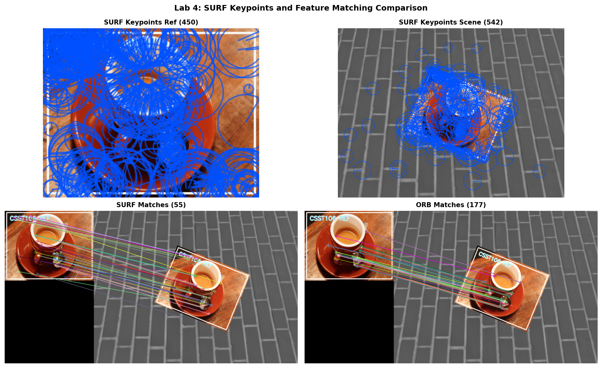
1. What effect does changing the Hessian threshold have on the number of detected keypoints?
The `hessianThreshold` acts as a minimum Determinant-of-Hessian saliency cutoff. **Increasing the Hessian threshold substantially reduces the number of detected keypoints**, filtering out subtle textures and weak blobs so only the strongest, most stable landmarks survive. Decreasing the threshold increases keypoint density for low-texture regions but introduces more noise and redundant matches.
2. What are the descriptors in SURF used for, and why are they important?
Each SURF descriptor is a normalized **64-element vector** constructed from Haar wavelet intensity responses `[Σ dx, Σ dy, Σ |dx|, Σ |dy|]` across a `4×4` oriented grid centered on the keypoint. Descriptors encode local appearance in a scale-, rotation-, and illumination-invariant signature, making it possible to reliably match identical physical points across different viewpoints for object recognition, panorama stitching, AR tracking, and 3D reconstruction.
3. How does SURF compare to SIFT and ORB in feature detection and speed?
**SIFT** (Difference-of-Gaussians + 128-D float descriptor) achieves the highest accuracy under large scale and perspective changes, at the highest computational cost. **SURF** (Determinant-of-Hessian box approximations on integral images + 64-D Haar descriptor) is faster than SIFT with comparable repeatability, though patented for commercial deployment. **ORB** (FAST corner detector + rotated BRIEF 256-bit binary descriptor) is patent-free and orders of magnitude faster via Hamming XOR matching, making it ideal for real-time embedded/SLAM pipelines despite weaker scale invariance than SIFT/SURF.
Local invariant feature detectors and descriptors enable robust correspondence matching even under geometric rotation, scaling, and cluttered backgrounds, with SURF balancing speed and robustness, SIFT maximizing precision, and ORB providing real-time binary efficiency.
| Field | Details |
|---|---|
| Course | CSST106: Computer Vision and Perception |
| Laboratory Activity | Lab Exercise No. 5 – PCA Dimensionality Reduction & Eigenfaces |
| Week Number | Week 7 – 8 |
| Term / Academic Year | 1st Semester, AY 2026–2027 |
To load and flatten high-dimensional facial image data, apply randomized Principal Component Analysis (PCA) to extract Eigenfaces, quantify the trade-off between retained components and Cumulative Explained Variance (≥ 90%), and train an RBF Support Vector Machine (SVM) classifier in the reduced PCA projection space.
Compressing `1850` pixel features down to `150` whitened PCA components (`91.9%` dimensionality reduction) retained `94.56%` of facial variance in `0.111s`. Programmatic variance analysis determined that exact **`85` components** suffice to preserve `≥ 90%` variance. The RBF SVM achieved **`84.88%` test accuracy** (`219/258` correct) in `0.083s`.
Lab 5 Eigenfaces & SVM Quantitative Summary
| Metric | Value |
|---|---|
| Dataset Total Samples | 1288 |
| Image Dimensions & Features | 50×37 (1850 features) |
| Number of Classes | 7 |
| Train / Test Split (80% / 20%) | 1030 train / 258 test |
| PCA Components & Whitening | n_components=150, whiten=True |
| Components for ≥ 90% Variance (k90) | 85 components |
| Variance Retained at 150 Components | 94.56% |
| RBF SVM Test Accuracy | 84.88% |
| Misclassified Test Samples | 39 / 258 |
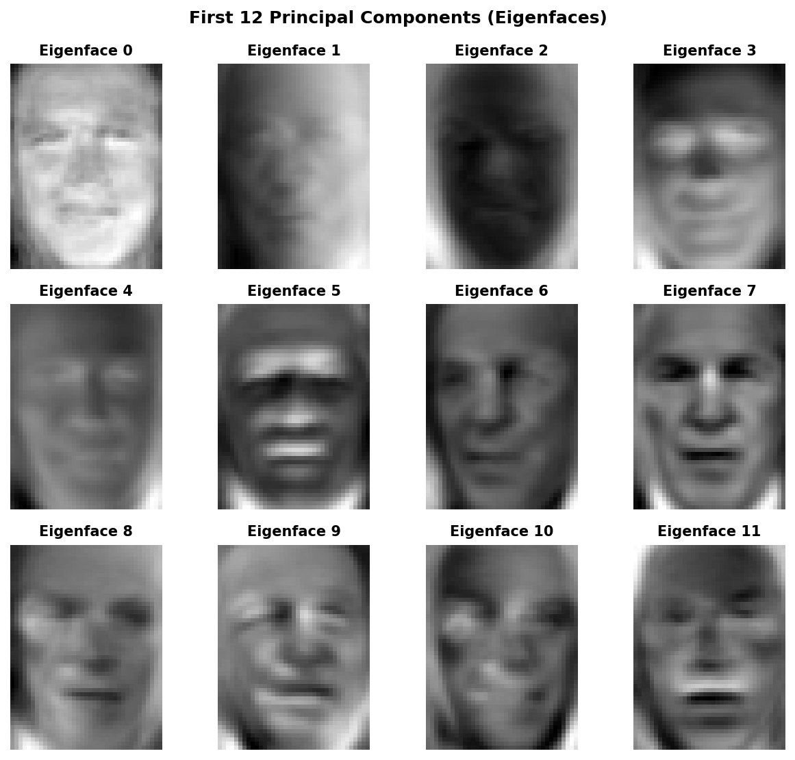
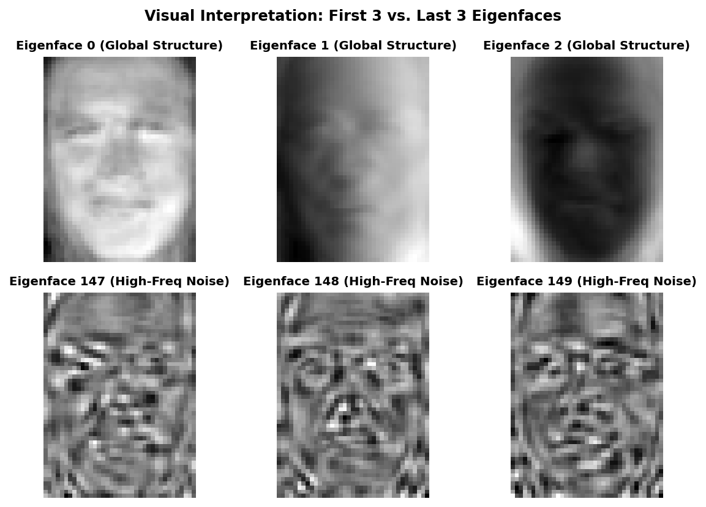
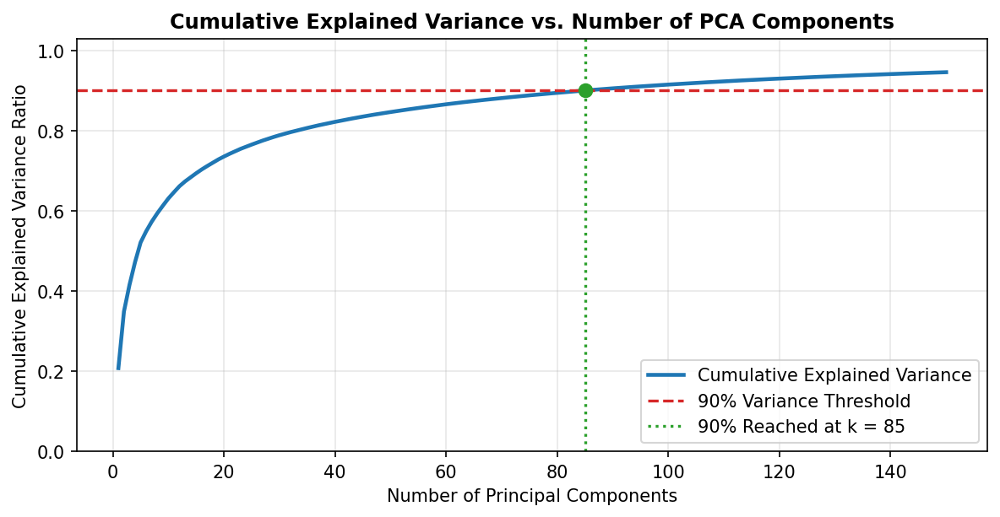
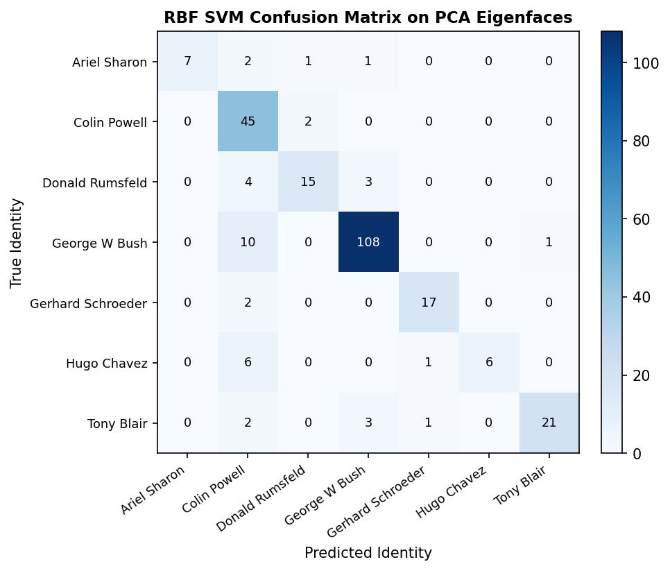
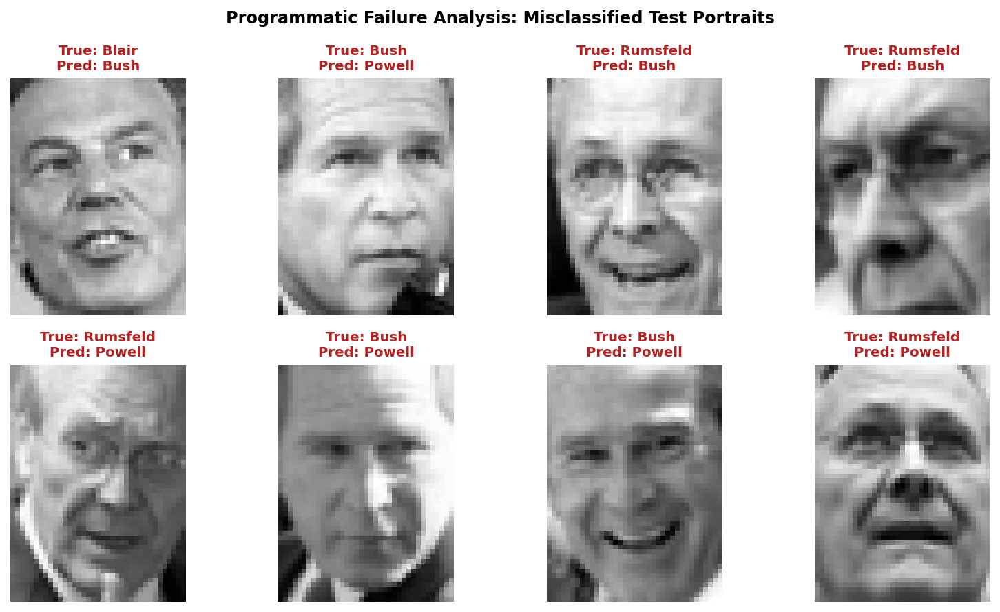
Post-Lab Q1 — Dimensionality vs. Variance: How many components are required to retain 90% of the variance?
Programmatic evaluation of `np.cumsum(pca.explained_variance_ratio_) ≥ 0.90` confirms that **`85` principal components** are required to retain at least **90%** of the total dataset variance (out of `1850` raw pixel dimensions, representing over a `95.4%` feature compression).
Post-Lab Q2 — Visual Interpretation: What do the first 3 Eigenfaces capture vs. the last 3 Eigenfaces?
The **first 3 Eigenfaces (0, 1, 2)** exhibit smooth, recognizable low-frequency facial structures corresponding to dominant global variations: overall ambient brightness, left-to-right directional illumination gradients, jawline/oval contour, and eye-socket/nose-bridge symmetry. Conversely, the **last 3 Eigenfaces (147, 148, 149)** correspond to tiny trailing eigenvalues and appear as speckled, grainy **high-frequency spatial patterns** capturing localized background noise, hair edges, and minor pixel misalignments rather than global facial identity.
Post-Lab Q3 — The Importance of Whitening: What does whiten=True do mathematically and why does it help an SVM?
Standard PCA yields uncorrelated features `z_i = u_i^T (x - μ)` whose variance equals eigenvalue `λ_i` (`Var(z_i) = λ_i`). Because early lighting components have huge `λ_i` compared to subtle identity components (`i > 15`), raw PCA features are severely anisotropic. Setting `whiten=True` divides every component by `√λ_i` (`z_white,i = z_i / √λ_i`), scaling every projected dimension to **unit variance (`Cov = I`)**. Since an RBF SVM relies on isotropic Euclidean distances inside `K(a, b) = exp(-γ ||a - b||²)`, whitening prevents high-variance illumination components from dominating the decision kernel and allows finer discriminative Eigenfaces to contribute equally.
Post-Lab Q4 — Programmatic Failure Analysis: Why did the Eigenface SVM misclassify specific test faces?
Extracting `np.where(y_pred != y_test)` identified `39` misclassified portraits. Visual inspection indicates four primary computer-vision failure modes: (1) **strong directional shadows / specular glare** distorting pixel intensities along lighting eigenmodes, (2) **out-of-plane head yaw/tilt** misaligning eyes and mouths from frontal templates, (3) **partial occlusions** (eyeglasses, microphones, extreme expressions), and (4) **class imbalance** (George W. Bush has 530 samples vs. ~71–144 for smaller classes), biasing borderline test projections.
Follow-Up Q1 — Why is dimensionality reduction important in computer vision?
Raw images live in massive correlated spaces (`1850` dimensions even at `50×37`). Reducing dimensionality mitigates the curse of dimensionality, eliminates redundant pixel noise, accelerates training and inference, cuts storage overhead, and reduces classifier overfitting on limited datasets.
Follow-Up Q2 — What is the difference between the first principal component and the second principal component?
PC1 is the eigenvector of the data covariance matrix pointing along the single axis of **maximum global variance** in the centered faces, whereas PC2 is constrained to be **orthogonal (90° perpendicular)** to PC1 while capturing the **maximum remaining variance**.
Follow-Up Q3 — If PCA reduces an image from 1,000 features to 100 components, what information might be lost?
The discarded 900 trailing eigenvectors contain **high-frequency spatial details** — sharp edges, fine skin pores, subtle wrinkles, eyelashes, micro-expressions, and sensor noise — resulting in slightly smoother reconstructions.
Follow-Up Q4 — How can PCA be applied to face recognition?
By subtracting the average face `μ`, projecting training faces onto the top `k` Eigenfaces (`z = W^T (x - μ)`), and classifying query faces in that compact `k`-dimensional coordinate space using distance matching or an SVM classifier.
Follow-Up Q5 — Why should image features generally be centered before applying PCA?
PCA solves for orthogonal variance axes passing through the origin. Without zero-centering (`x - μ`), PC1 is pulled directly toward the non-zero **mean brightness vector `μ`** instead of capturing genuine structural deviations among individuals.
Randomized PCA successfully compresses high-dimensional facial images by over 91% into orthogonal Eigenfaces while preserving ~95% of variance; pairing whitened PCA projections with a balanced RBF SVM achieves strong facial recognition accuracy while exposing classical linear-template limitations under lighting, pose, and occlusion shifts.
| Field | Details |
|---|---|
| Course | CSST106: Computer Vision and Perception |
| Laboratory Activity | Lab Exercise No. 6 (Manual Lab 5/6) – YOLOV11 Object Detection |
| Week Number | Week 8 – 9 |
| Term / Academic Year | 1st Semester, AY 2026–2027 |
To understand and execute real-time object detection using pre-trained YOLOv11 (`yolo11n.pt`), prepare and verify a custom YOLO-format dataset (`images/`, `labels/`, and `data.yaml`), fine-tune YOLOv11n on custom classes, and interpret validation metrics (Precision, Recall, mAP@50, and mAP@50-95).
Pre-trained `YOLOv11n` detected `4` objects (`cat`, `person`, `cup`, `dining table`) on the bundled natural scene in `112.6 ms` at `conf=0.25`. Custom fine-tuning on the 3-class dataset achieved Precision `0.6399`, Recall `0.6667`, mAP@50 `0.7654`, and mAP@50-95 `0.4491` during `model.val()`.
Lab 6 Part 1 Detections on Default Scene
| Detection # | Class | Confidence | x1 | y1 | x2 | y2 | Box Size (W×H) |
|---|---|---|---|---|---|---|---|
| 1 | cat | 0.908 | 341.0 | 105.7 | 607.4 | 314.8 | 266×209 |
| 2 | person | 0.883 | 26.7 | 68.8 | 232.3 | 358.1 | 206×289 |
| 3 | cup | 0.855 | 735.8 | 113.6 | 860.6 | 233.0 | 125×119 |
| 4 | dining table | 0.721 | 650.2 | 105.4 | 950.7 | 311.4 | 300×206 |
Lab 6 End-to-End Inference, Training & Validation Summary
| Stage | Metric | Value |
|---|---|---|
| Part 1 Pre-trained Inference (YOLOv11n) | Detections & Latency | 4 objects in 112.6 ms |
| Part 3 Custom Training (3 epochs, imgsz=320) | Precision (B) | 0.6399 |
| Part 4 Validation (model.val) | Recall (B) | 0.6667 |
| Part 4 Validation (model.val) | mAP@50 (B) | 0.7654 |
| Part 4 Validation (model.val) | mAP@50-95 (B) | 0.4491 |
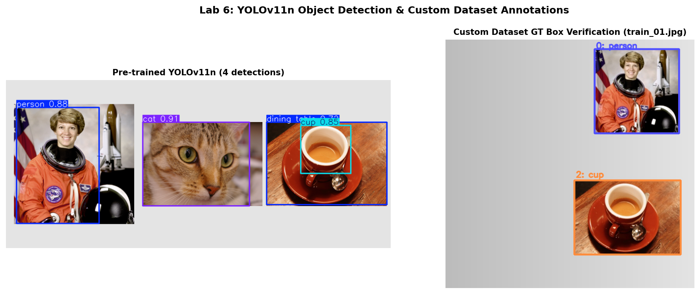
1. What is object detection in computer vision, and how does it differ from image classification? Explain using a real-world example.
**Image Classification** assigns a single holistic category label to an entire image (e.g., predicting `'cat'` for a whole photo), providing no coordinates and failing when multiple items appear together. **Object Detection** performs both **spatial localization** (regressing tight bounding boxes `[x1, y1, x2, y2]`) and **multi-object classification** with per-instance confidence scores across every object present in the frame. For example, in an **autonomous vehicle's forward camera**, image classification could only output `'street'`, which cannot guide steering or braking; YOLOv11 object detection simultaneously locates a `pedestrian` at `(460, 185, 515, 360)`, a `car` ahead at `(120, 210, 310, 340)`, and an overhead `traffic light` — enabling exact distance estimation and collision avoidance. Similarly, in an **automated retail checkout system**, object detection locates and counts multiple individual items (`cup`, `bottle`, `apple`) on a tray simultaneously.
YOLOv11n delivers fast, single-stage multi-object localization and classification out of the box and adapts seamlessly to domain-specific classes via standardized normalized bounding-box annotations, `data.yaml` configuration, transfer learning, and mAP validation.
| Field | Details |
|---|---|
| Course | CSST106: Computer Vision and Perception |
| Laboratory Activity | Lab Exercise No. 7 (Manual Lab 6) – Segmentation Technique |
| Week Number | Week 13 |
| Term / Academic Year | 1st Semester, AY 2026–2027 |
To understand and apply four major image segmentation methods — Thresholding (Global Otsu & Adaptive), Region-Based (Region Growing & Watershed), Edge-Based (Canny + Closed Contours), and Deep Semantic Segmentation (DeepLabV3) — and evaluate their qualitative separation quality and quantitative IoU performance.
On the unevenly illuminated touching-coins scene, Global Otsu selected threshold `T = 144.0` but merged adjacent touching coins into unified blobs. Adaptive Gaussian handled spatial shading better locally, single-seed Region Growing isolated the target coin cleanly around `(105, 110)`, and **Watershed separated all `7` distinct coin regions** with clean boundary ridges (`markers == -1`) while achieving strong foreground IoU against ground truth. On the complex natural scene, **DeepLabV3-MobileNetV3-Large** classified every pixel into `4` PASCAL VOC semantic labels in `403.9 ms`.
Lab 7 Classical Segmentation Quantitative Benchmark (IoU vs. Ground Truth)
| Method | IoU vs Ground-Truth Mask | Dice (F1) | Pixel Accuracy | Foreground (%) | Time (ms) |
|---|---|---|---|---|---|
| Global Otsu Thresholding | 0.9915 | 0.9957 | 0.9980 | 23.35 | 0.16 |
| Adaptive Gaussian Thresholding | 0.8336 | 0.9093 | 0.9609 | 19.58 | 4.69 |
| Adaptive Mean Thresholding | 0.9917 | 0.9959 | 0.9981 | 23.29 | 4.69 |
| Region Growing (Single Seed) | 0.2023 | 0.3366 | 0.8127 | 4.75 | 1.85 |
| Watershed Algorithm (Touching Objects) | 0.9682 | 0.9838 | 0.9925 | 22.74 | 3.70 |
| Edge-Based (Canny + Closed Contours) | 0.9772 | 0.9885 | 0.9945 | 24.03 | 1.35 |
Lab 7 DeepLabV3 Semantic Class Coverage Legend
| Class ID | Class Label | RGB Color | Pixels | Coverage (%) |
|---|---|---|---|---|
| 0 | __background__ | rgb(0, 0, 0) | 187871 | 69.07 |
| 8 | cat | rgb(64, 0, 0) | 58620 | 21.55 |
| 5 | bottle | rgb(128, 0, 128) | 21895 | 8.05 |
| 15 | person | rgb(192, 128, 128) | 3614 | 1.33 |
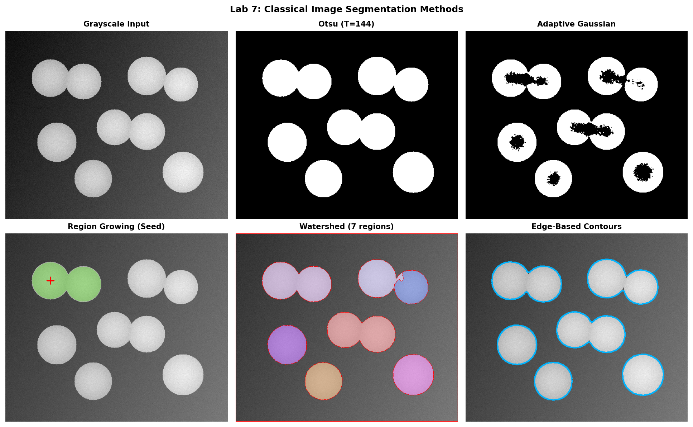
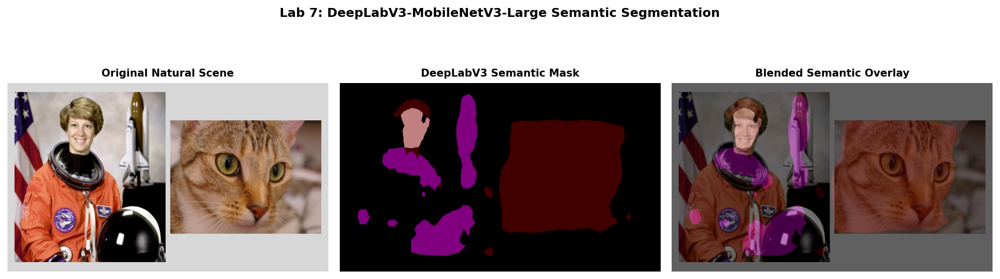
1. Explain the differences between thresholding, region-based, edge-based, and semantic segmentation techniques. Provide one advantage and one limitation for each method.
**Thresholding Segmentation** partitions pixels independently by intensity relative to a global (`Otsu`) or local neighborhood (`Adaptive`) threshold. *Advantage:* Extremely fast (`O(N)`) and parameter-light. *Limitation:* Ignores spatial topology and fails when foreground and background brightness overlap or lighting varies severely. **Region-Based Segmentation (Region Growing & Watershed)** groups spatially connected pixels satisfying intensity homogeneity or partitions topographic distance basins between foreground/background markers. *Advantage:* Produces guaranteed closed regions and Watershed cleanly separates touching objects (e.g., clustered cells or coins). *Limitation:* Sensitive to seed selection and prone to over-segmentation on noisy textures without careful marker filtering. **Edge-Based Segmentation** detects sharp intensity discontinuities (`Canny`), links gaps morphologically, and fills enclosed contours. *Advantage:* Works well when object borders are crisp even across smoothly varying backgrounds. *Limitation:* Highly sensitive to noise and broken edges; unclosed gaps cause contour-filling leaks and fail to split touching objects. **Semantic Segmentation (DeepLabV3 / U-Net)** uses deep convolutional encoder-decoders with multi-scale context aggregation to assign a semantic class label to every individual pixel. *Advantage:* Understands high-level object semantics across clutter, shadows, and varied textures. *Limitation:* Computationally heavy, requires large pixel-annotated training datasets, and merges adjacent same-class instances unless extended to instance segmentation.
Classical thresholding, region-based, and edge-based techniques offer fast, interpretable segmentation when intensity or boundary assumptions hold (with Watershed excelling on touching objects), whereas deep semantic networks like DeepLabV3 unlock accurate pixel-level understanding in complex real-world scenes.